iOS 多语言环境设置#
一、目标#
- App语言跟随当前手机系统语言
- 用户主动切换当前App语言，即：App语言不同于手机系统语言
二、参考资料#
- 3分钟实现iOS语言本地化/国际化（图文详解）
- iOS App内语言切换（国际化）
- 在iOS App内优雅的动态切换语言
- iOS国际化 （多语言）
- Demos-LanguageSettingsDemo
- iOS - 多语言本地化
三、特别说明#
-
经实践证明，如果配置多语言化，那么Xcode将会刷新
Info.plist，导致里面的注释消失。正确的做法是，对Info.plist进行备份，随时进行替换 -
工程项目的
Info.plist文件是对整个工程的配置说明，系统固定读取，所以必须在工程项目根目录的同名文件夹下。否则项目启动会出问题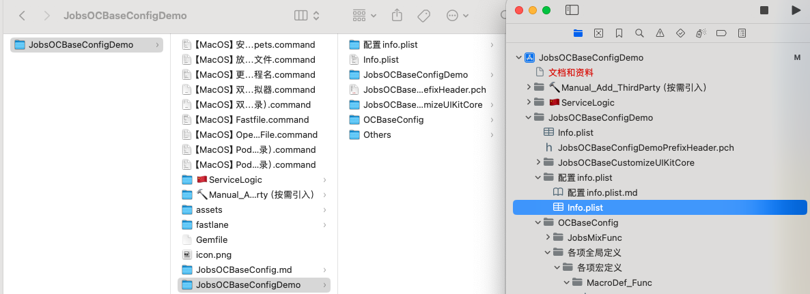
四、配置流程#
1、Xcode 中的配置#
-
选中 project ➤ Info ➤ Localizations，然后点击"+"，添加需要国际化 / 本地化的语言
-
默认勾选
Use Base Internationalization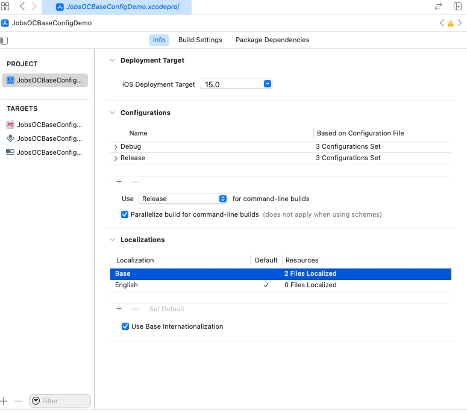
-
如果不勾选
Use Base Internationalization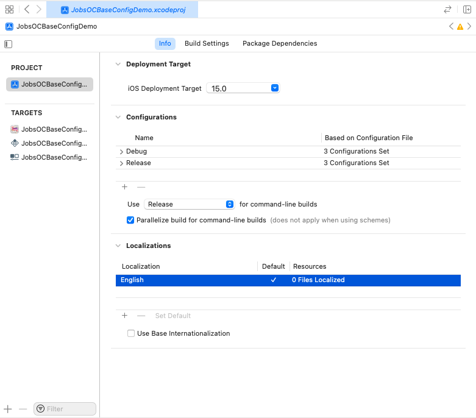
-
添加语言：简体中文 / 标准英语 / 菲律宾他加禄语言
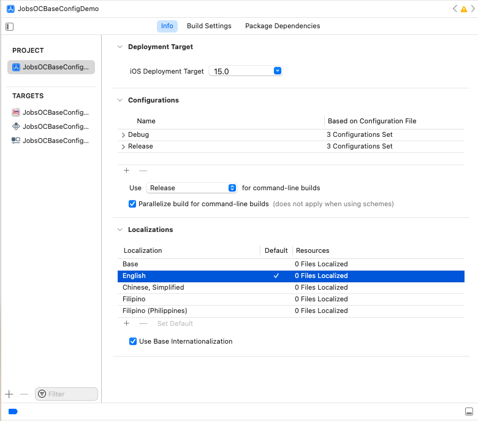
-
zh-Hans和zh-Hant是简体中文和繁体中文的缩写。这是标准的缩写。H可大写也可小写。 -
如果弹出如下对话框，直接点击finish
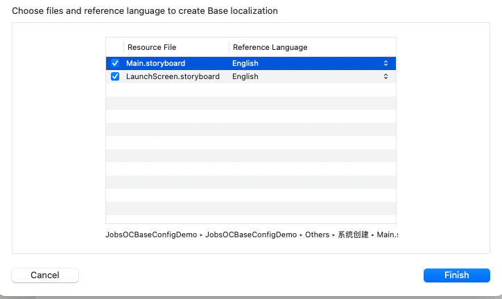
-
2、语言代码#
-
同一种语言，因为方言文化等历史原因，会对应多个语言代码
-
英语：这些代码通常由
ISO 639-1语言代码（en）和ISO 3166-1国家代码（如US、GB）组合而成，用于指定不同地区的英语变体- en：英语（通用）
- en-US：美国英语
- en-GB：英国英语
- en-AU：澳大利亚英语
- en-CA：加拿大英语
- en-NZ：新西兰英语
- en-IE：爱尔兰英语
- en-ZA：南非英语
- en-IN：印度英语
- en-SG：新加坡英语
- en-PH：菲律宾英语
- en-NG：尼日利亚英语
- en-ZW：津巴布韦英语
-
汉语：这些代码
ISO 639-1由语言代码（zh）和ISO 15924书写系统代码（如Hans、Hant）或ISO 3166-1国家代码（如CN、SG）组合而成- zh：中文（通用）
- zh-Hans：简体中文
- zh-Hant：繁体中文
- zh-CN：中国大陆的简体中文
- zh-SG：新加坡的简体中文
- zh-TW：台湾的繁体中文
- zh-HK：香港的繁体中文
- zh-MO：澳门的繁体中文
-
菲律宾语言：这些代码主要是
ISO 639-2和ISO 639-3语言代码，用于表示菲律宾的不同语言和方言-
fil：菲律宾语（Filipino），基于他加禄语（Tagalog）
-
tl：他加禄语（Tagalog），
ISO 639-1代码 -
fil-PH：菲律宾的菲律宾语
-
tl-PH：菲律宾的他加禄语
-
菲律宾方言：方言的代码通常是独立使用，并不需要加前缀
-
ceb：宿务语（Cebuano）
-
ilo：伊洛卡诺语（Ilocano）
-
bik：比科尔语（Bikol）
-
war：瓦瑞语（Waray）
-
hil：希利盖农语（Hiligaynon）
-
-
3、应用名称本地化 / 国际化（InfoPlist.strings）#
-
是指同一个App的名称，在不同的语言环境下（也就是手机设备的语言设置）显示不同的名称； 比如，微信在简体中文环境下App名称显示为微信，在英语环境下显示为weChat
- 新建
Strings File文件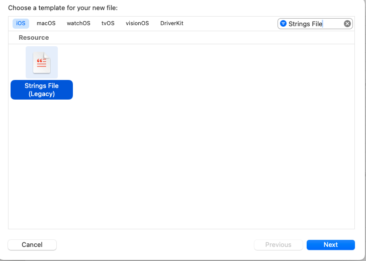
- 保存的文件名
InfoPlist.strings为系统所需，不可更改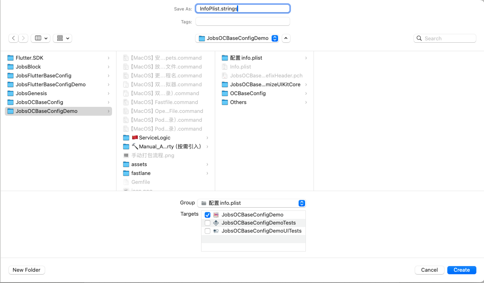
- 新生成的
InfoPlist.strings在当前电脑上的实际路径，其实是在en.lproj文件夹下。其中en.lproj和此工程项目的Info.plist处于同一文件层级；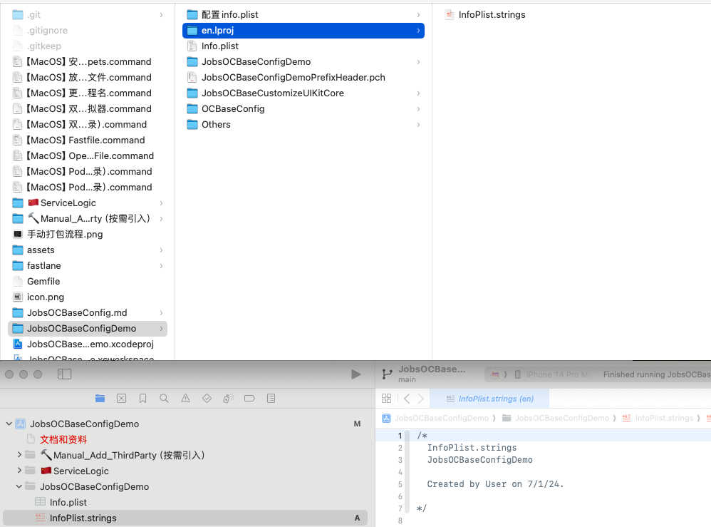
- 当删除磁盘上的语言包
*.lproj文件夹，项目工程Xcode目录索引还有引用，也需要一并删除。在Xcode右侧的文件选项卡中，移除勾选。弹出框选择Remove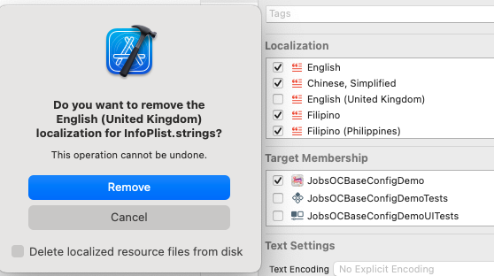
- Localize流程：选中新生成的
InfoPlist.strings，在Xcode的File inspection（Xcode右侧文件检查器）中点击Localize，目的是选择我们需要本地化的语言 - 点击Localize后，会弹出一个对话框，展开对话框列表，发现下拉列表所展示的语言正是我们在上面配置的需要国际化的语言，选择我们需要本地化的语言，然后点击对话框的Localize按钮
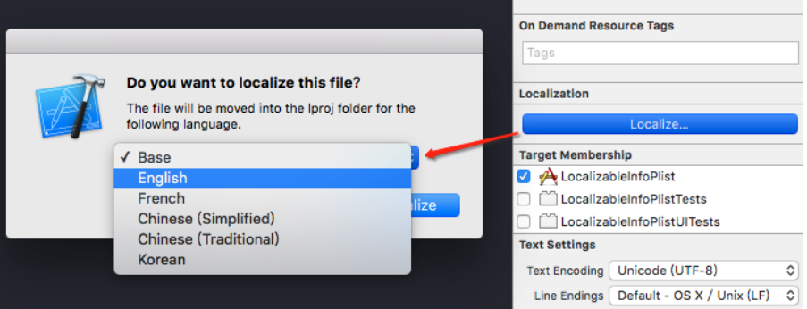
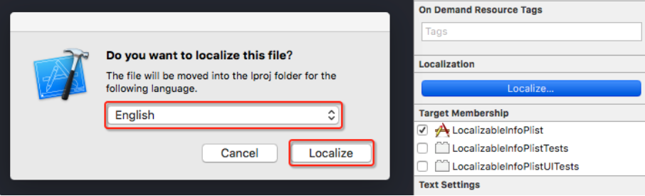
- 注意：如果我们没有在 PROJECT 中配置需要国际化的语言（project ➤ Info ➤ Localizations，然后点击"+"），上图下拉列表中将只会出现
Base和English选项，English语言是系统默认的语言，其他需要国际化的语言（例如中文简体、法语）必须通过上面的配置本地化语言那一步手动添加。 - 添加了
InfoPlist.strings在 project ➤ Info ➤ Localizations 下可以看到有文件被检测到关联：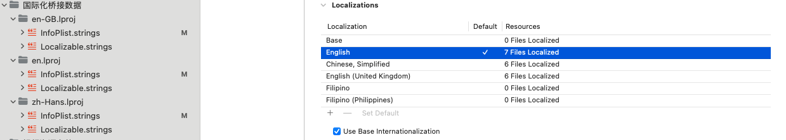
- 如果项目曾经有做过过多语言化的处理，则右侧选项卡不会
Localize按钮，也不会弹出Do you want to localize this file对话框 - 对
InfoPlist.strings在 Xcode 右侧选项卡进行点选：InfoPlist.strings会化身为一个大的文件夹，下面包含各种语言包的子InfoPlist.strings点一个加入一个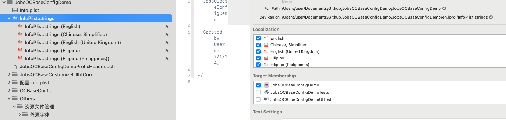
- 新建
-
对
Info.plist的修改：-
向下兼容：
<!-- 用于指定应用程序的显示名称是否本地化 --> <key>LSHasLocalizedDisplayName</key> <true/> <!-- 应用支持的所有语言代码，这些语言代码应该与您的本地化资源文件夹相匹配 --> <key>CFBundleLocalizations</key> <array> <string>en</string> <string>zh-Hans</string> <string>fil-PH</string> </array> <!-- 开发区域的语言代码 --> <key>CFBundleDevelopmentRegion</key> <string>en</string>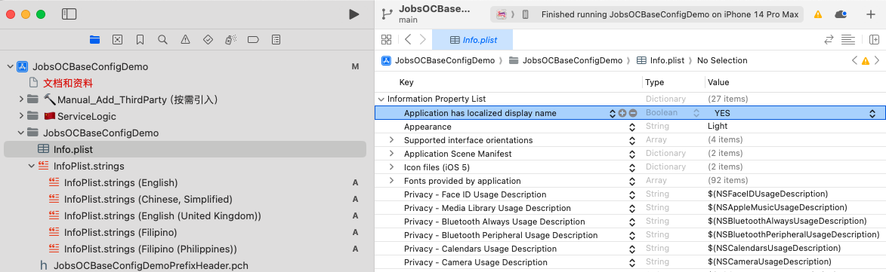
-
4、代码中字符串的本地化（Localizable.strings）#
-
指App内的字符串在不同的语言环境下显示不同的内容；
-
保存的文件名
Localizable.strings为系统所需，不可更改 -
像创建
InfoPlist.strings一样，新建Localizable.strings文件，包括Localize流程； -
新生成的
Localizable.strings文件，位于en.lproj文件夹之下，和InfoPlist.strings平行；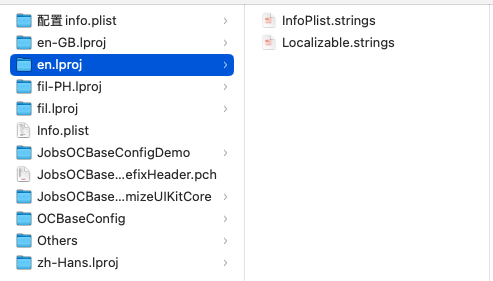
-
对新生成的
Localizable.strings文件，在Xcode右侧选项卡进行点选，和InfoPlist.strings的操作一样； -
枚举映射语言字符串
/// 系统支持语言 #ifndef APP_LANGUAGE_ENUM_DEFINED #define APP_LANGUAGE_ENUM_DEFINED typedef NS_ENUM(NSInteger, AppLanguage) { AppLanguageBySys,/// App语言跟随当前系统 AppLanguageChineseSimplified, /// zh-Hans：简体中文 AppLanguageChineseTraditional,/// zh-Hant：繁体中文 AppLanguageEnglish, /// en：标准英语 AppLanguageTagalog /// tl：菲律宾他加禄语 }; #endif/* APP_LANGUAGE_ENUM_DEFINED */ -
关注实现类：@interface JobsLanguageManager : NSObject
-
获取当前语言
/// 获取和设置当前语言 @property(class,nonatomic,assign)AppLanguage language; /// 语言包路径 + (NSBundle *)bundle; /// 枚举和语言字符串的转换 + (NSString *)languageCodeForAppLanguage:(AppLanguage)language; /// 通过key取值对应的语言 + (NSString *)localStringWithKey:(NSString *_Nonnull)key;
-
-
以宏的方式进行封装。最上层使用
JobsInternationalization(@"")关注实现类：
MacroDef_String.h#pragma mark —— 国际化 static inline NSString *_Nonnull JobsInternationalization(NSString *_Nonnull text){ return [JobsLanguageManager localStringWithKey:text]; }关注实现类：@interface NSObject (Extras)
/// App 国际化相关系统宏二次封装 + 设置缺省值 +(NSString *_Nullable)localStringWithKey:(nonnull NSString *)key{ return NSLocalizedString(key, nil); } +(NSString *_Nullable)localizedString:(nonnull NSString *)key fromTable:(nullable NSString *)tableName{ return NSLocalizedStringFromTable(key, tableName, nil); } +(NSString *_Nullable)localizedString:(nonnull NSString *)key fromTable:(nullable NSString *)tableName inBundle:(nullable NSBundle *)bundle{ return NSLocalizedStringFromTableInBundle(key, tableName, bundle ? : NSBundle.mainBundle, nil); } +(NSString *_Nullable)localizedString:(nonnull NSString *)key fromTable:(nullable NSString *)tableName inBundle:(nullable NSBundle *)bundle defaultValue:(nullable NSString *)defaultValue{ return NSLocalizedStringWithDefaultValue(key, tableName, bundle ? : NSBundle.mainBundle, defaultValue, nil); } -
每一次切换语言环境，都必须重塑数据源。即，重新运行一次
JobsInternationalization相关的代码。否则效果无法展示 -
语言环境切换的时候，对通知的使用
#ifndef LanguageSwitchNotification_defined #define LanguageSwitchNotification_defined NSString *const JobsLanguageSwitchNotification = @"JobsLanguageSwitchNotification";// 语言切换 #endif /* LanguageSwitchNotification_defined */@jobs_weakify(self) JobsAddNotification(self, selectorBlocks(^id _Nullable(id _Nullable weakSelf, id _Nullable arg){ NSNotification *notification = (NSNotification *)arg; if([notification.object isKindOfClass:NSNumber.class]){ NSNumber *b = notification.object; NSLog(@"SSS = %d",b.boolValue); } @jobs_strongify(self) NSLog(@"通知传递过来的 = %@",notification.object); return nil; },nil, self),JobsLanguageSwitchNotification,nil);
5、图片本地化#
和本地化代码中的字符串一样，通过
NSLocalizedString(key,comment)来获取相应的字符串，然后根据这个字符串再获取图片。
NSString *imageName = NSLocalizedString(@"icon", nil);
UIImage *image = [UIImage imageNamed:imageName];
self.imageView.image = image;6、第三方支援#
JobsLanguageManager.h
//
// JobsLanguageManager.h
// JobsOCBaseConfigDemo
//
// Created by User on 7/5/24.
//
#import <Foundation/Foundation.h>
#import "MacroDef_UserDefault.h"
/// 系统支持语言
#ifndef APP_LANGUAGE_ENUM_DEFINED
#define APP_LANGUAGE_ENUM_DEFINED
typedef NS_ENUM(NSInteger, AppLanguage) {
AppLanguageBySys,/// App语言跟随当前系统
AppLanguageChineseSimplified, /// zh-Hans：简体中文
AppLanguageChineseTraditional,/// zh-Hant：繁体中文
AppLanguageEnglish, /// en：标准英语
AppLanguageTagalog /// tl：菲律宾他加禄语
};
#endif/* APP_LANGUAGE_ENUM_DEFINED */
FOUNDATION_EXTERN NSString * _Nonnull const JobsLanguageKey;
NS_ASSUME_NONNULL_BEGIN
@interface JobsLanguageManager : NSObject
/// 获取和设置当前语言
@property(class,nonatomic,assign)AppLanguage language;
/// 语言包路径
+ (NSBundle *)bundle;
/// 枚举和语言字符串的转换
+ (NSString *)languageCodeForAppLanguage:(AppLanguage)language;
/// 通过key取值对应的语言
+ (NSString *)localStringWithKey:(NSString *_Nonnull)key;
@end
NS_ASSUME_NONNULL_ENDJobsLanguageManager.m
//
// JobsLanguageManager.m
// JobsOCBaseConfigDemo
//
// Created by User on 7/5/24.
//
#import "JobsLanguageManager.h"
NSString *const JobsLanguageKey = @"JobsLanguageKey";
@implementation JobsLanguageManager
static NSBundle *bundle = nil;
static AppLanguage _language = AppLanguageBySys;
+ (void)initialize {
static dispatch_once_t onceToken;
dispatch_once(&onceToken, ^{
/// 读取存储的语言设置
[self setLanguage:JobsGetUserDefaultIntegerForKey(JobsLanguageKey)];
});
}
/// 语言包路径
+ (NSBundle *)bundle {
return bundle;
}
/// 获取当前语言
+ (AppLanguage)language {
return _language;
}
/// 设置当前语言
+ (void)setLanguage:(AppLanguage)language {
_language = language;
NSString *languageCode = [self languageCodeForAppLanguage:language];
NSString *path = [NSBundle.mainBundle pathForResource:languageCode ofType:@"lproj"];
if (path) {
bundle = [NSBundle bundleWithPath:path];
} else {
bundle = NSBundle.mainBundle;
}
/// 存储当前语言设置
JobsSetUserDefaultKeyWithInteger(JobsLanguageKey, language);
JobsUserDefaultSynchronize;
}
/// 枚举和语言字符串的转换
+ (NSString *)languageCodeForAppLanguage:(AppLanguage)language {
switch (language) {
case AppLanguageChineseSimplified:
return @"zh-Hans";
case AppLanguageChineseTraditional:
return @"zh-Hant";
case AppLanguageEnglish:
return @"en";
case AppLanguageTagalog:
return [NSBundle.mainBundle pathForResource:@"fil" ofType:@"lproj"] ? @"fil" : @"fil-PH";
default:
return NSLocale.preferredLanguages.firstObject;
}
}
/// 通过key取值对应的语言
+ (NSString *)localStringWithKey:(NSString *_Nonnull)key {
return [self localizedString:key
fromTable:nil
inBundle:self.bundle];
}
@end7、相关调用#
-
原理：应用启动时，首先会读取NSUserDefaults中的key为
JobsLanguageKey对应的value，该value是一个String数组。也就是说，我们访问这个名为JobsLanguageKey的key可以返回一个string数组，该数组存储着APP支持的语言列表，数组的第一项为APP当前默认的语言。+ (void)initialize { static dispatch_once_t onceToken; dispatch_once(&onceToken, ^{ /// 读取存储的语言设置 [self setLanguage:JobsGetUserDefaultIntegerForKey(JobsLanguageKey)]; }); } -
同理，既然我们可以通过
JobsLanguageKey这个key从NSUserDefaults中取出语言数组，那么我们也可以给JobsLanguageKey这个key赋值来达到切换本地语言的效果，从此以后，我们就无需频繁的去模拟器的设置→通用→语言与地区 中切换语言。- (void)tableView:(UITableView *)tableView didSelectRowAtIndexPath:(NSIndexPath *)indexPath{ [tableView deselectRowAtIndexPath:indexPath animated:YES]; /// 当前点选的Cell UITableViewCell *cell = [tableView cellForRowAtIndexPath:indexPath]; for (UITableViewCell *acell in tableView.visibleCells) { acell.accessoryType = acell == cell ? UITableViewCellAccessoryCheckmark : UITableViewCellAccessoryNone; } [self setAppLanguageAtAppLanguage:self.dataMutArr[indexPath.row].appLanguage];/// 设置App语言环境并发送全局通知JobsLanguageSwitchNotification [self changeTabBarItemTitle:indexPath];///【App语言国际化】更改UITabBarItem的标题 /// 重塑数据源 [self.dataMutArr removeAllObjects]; _dataMutArr = nil; /// 刷新本界面 [self.tableView.mj_header beginRefreshing]; @jobs_weakify(self) /// 2秒后退出本页面 // DispathdDelaySth(2.0, [weak_self backBtnClickEvent:nil]); }
五、总结#
-
其实是操作语言包文件夹
*.lproj内的InfoPlist.strings和Localizable.strings。所以一定确保这两个文件一定是包含在工程文件里（需要进入编译期） -
语言包文件夹
*.lproj的名字，就是每个语言对应的索引； -
InfoPlist.strings：App名字的多语言化； -
Localizable.strings：App内容的多语言化； -
如果当前的key是锚定的中文，那么在
Localizable.strings(Chinese,Simplified)文件中可以不写。因为当通过key检索不到内容时，这个时候key就是内容；-
Localizable.strings (English)
"App国际化之应用内部切换语言" = "App language switch"; "跟随系统" = "By System"; "中文" = "Chinese"; "英文" = "English"; "他加禄语" = "Tagalog"; -
Localizable.strings (Filipino) 和 Localizable.strings (Filipino (Philippines))
"App国际化之应用内部切换语言" = "Paglipat ng wika ng app"; "跟随系统" = "Sundin ang sistema"; "中文" = "Intsik"; "英文" = "Ingles"; "他加禄语" = "Tagalog"; -
Localizable.strings (Chinese,Simplified)
/// 如果当前的key是锚定的中文，那么在`Localizable.strings(Chinese,Simplified)`文件中可以不写
-